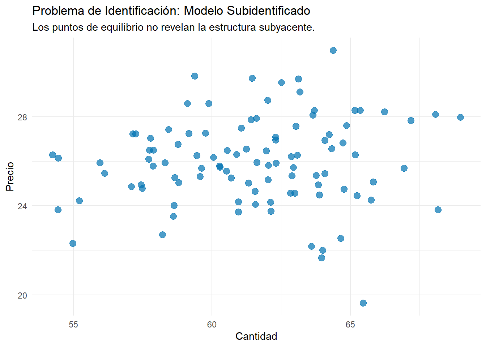
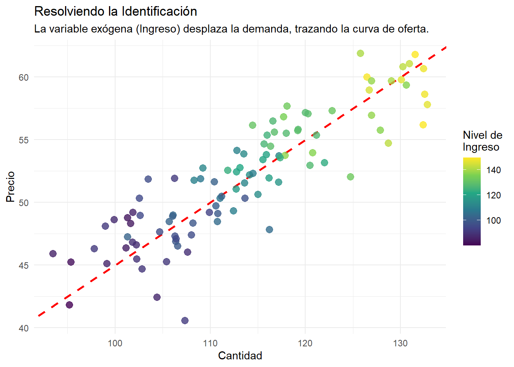

1 Introducción a los Modelos de Ecuaciones Simultáneas (MES)
A diferencia de los modelos uniecuacionales, en los que una sola variable dependiente (\(Y\)) se explica por una o más variables explicativas (\(X\)), los modelos de ecuaciones simultáneas se utilizan para analizar las interacciones y la retroalimentación entre diferentes variables económicas.
Definición Formal: “En los modelos de regresión con una sola ecuación, se supone que una variable dependiente (\(Y\)) es una función de una o más variables explicativas (\(X\)). […] En tales modelos, se supone implícitamente que la relación de causalidad, si existe, va de las \(X\) a la \(Y\). Pero en muchas situaciones, tal supuesto de una relación unidireccional o unilateral no es apropiado.”
— Gujarati, D. N., & Porter, D. C. (2009). Econometría (5a ed., p. 656).
En un MES, existen múltiples ecuaciones, una para cada una de las variables mutuamente dependientes o endógenas. No es posible estimar los parámetros de una ecuación aisladamente sin tener en cuenta la información proporcionada por las demás ecuaciones del sistema.
Un sistema general de dos ecuaciones se puede escribir como: \[Y_{1t} = \beta_{10} + \beta_{12}Y_{2t} + \gamma_{11}X_{1t} + u_{1t}\]\[Y_{2t} = \beta_{20} + \beta_{21}Y_{1t} + \gamma_{21}X_{2t} + u_{2t}\]
Donde:
\(Y_1\) y \(Y_2\) son variables endógenas (mutuamente dependientes y estocásticas).
\(X_1\) y \(X_2\) son variables exógenas (sus valores se determinan fuera del modelo). * \(u_1\) y \(u_2\) son los términos de perturbación estocásticos.
2 Ejemplos de Modelos de Ecuaciones Simultáneas
2.1 Modelo de Demanda y Oferta
El precio (\(P\)) y la cantidad (\(Q\)) de un bien se determinan por la intersección de las curvas de demanda y oferta. Esto crea un sistema inherentemente simultáneo.
Función de demanda:\(Q_t^d = \alpha_0 + \alpha_1 P_t + u_{1t}\)
Función de oferta:\(Q_t^s = \beta_0 + \beta_1 P_t + u_{2t}\)
Condición de equilibrio:\(Q_t^d = Q_t^s\)
En este sistema, \(P_t\) y \(Q_t\) son las variables endógenas.
2.2 Modelo Keynesiano Simple de Determinación del Ingreso
En este modelo, el consumo (\(C_t\)) depende del ingreso (\(Y_t\)), pero al mismo tiempo, el ingreso es la suma del consumo y la inversión (\(I_t\)).
Función de consumo:\(C_t = \beta_0 + \beta_1 Y_t + u_t\)
Identidad de ingreso:\(Y_t = C_t + I_t\)
Aquí, \(C_t\) y \(Y_t\) son las variables endógenas, mientras que la inversión (\(I_t\)) se considera exógena. La interdependencia es clara: un cambio en el término de error \(u_t\) afecta al consumo \(C_t\), lo que a su vez afecta al ingreso \(Y_t\).
3 El Problema del Sesgo por Simultaneidad
¿Qué sucede si aplicamos Mínimos Cuadrados Ordinarios (MCO) a una ecuación de un sistema simultáneo, como la función de consumo?
La respuesta es que los estimadores de MCO serán sesgados e inconsistentes. Esto se debe a que se viola uno de los supuestos fundamentales del modelo clásico de regresión lineal: la no correlación entre las variables explicativas y el término de error.
3.1 Demostración de la Inconsistencia de MCO
Usando el modelo keynesiano, podemos demostrar que la variable explicativa endógena \(Y_t\) está correlacionada con el término de error \(u_t\).
Expresar \(Y_t\) en su forma reducida: Sustituyendo la función de consumo en la identidad de ingreso: \(Y_t = (\beta_0 + \beta_1 Y_t + u_t) + I_t\) Resolviendo para \(Y_t\): \[Y_t = \frac{\beta_0}{1-\beta_1} + \frac{I_t}{1-\beta_1} + \frac{u_t}{1-\beta_1}\]
Calcular la covarianza entre \(Y_t\) y \(u_t\): Asumiendo que \(E(u_t) = 0\) y que la inversión \(I_t\) es exógena (\(Cov(I_t, u_t) = 0\)), se puede demostrar que: \[Cov(Y_t, u_t) = E[(Y_t - E(Y_t))(u_t - E(u_t))] = \frac{\sigma^2}{1-\beta_1}\] Como \(0 < \beta_1 < 1\) (la propensión marginal a consumir), esta covarianza es diferente de cero.
Evaluar el estimador de MCO \(\hat{\beta}_1\): El estimador MCO para \(\beta_1\) es \(\hat{\beta}_1 = \frac{\sum c_t y_t}{\sum y_t^2}\). Sustituyendo \(c_t = \beta_1 y_t + u_t\), obtenemos: \[\hat{\beta}_1 = \beta_1 + \frac{\sum u_t y_t}{\sum y_t^2}\] Debido a que \(Y_t\) y \(u_t\) están correlacionados, el segundo término no es cero, lo que hace que \(\hat{\beta}_1\) sea sesgado.
Evaluar la consistencia: Tomando el límite de probabilidad (plim) cuando el tamaño de la muestra \(n \to \infty\): \[plim(\hat{\beta}_1) = \beta_1 + \frac{plim(\frac{1}{n}\sum u_t y_t)}{plim(\frac{1}{n}\sum y_t^2)} = \beta_1 + \frac{Cov(Y_t, u_t)}{Var(Y_t)}\]\[plim(\hat{\beta}_1) = \beta_1 + \frac{1}{1-\beta_1} \left( \frac{\sigma^2}{\sigma_Y^2} \right)\] Como el segundo término es positivo, \(plim(\hat{\beta}_1) > \beta_1\). El estimador de MCO sobrestima consistentemente la verdadera propensión marginal a consumir.
4 El Problema de la Identificación
Antes de poder estimar un modelo, debemos asegurarnos de que está identificado.
El Problema de la Identificación: “En un sistema de ecuaciones simultáneas, puede suceder que una o más ecuaciones no puedan estimarse. Si este es el caso, tenemos lo que se conoce como el problema de la identificación… Una ecuación está identificada si sus parámetros pueden estimarse de manera única a partir de los datos.”
— Gujarati, D. N., & Porter, D. C. (2009). Econometría (5a ed., p. 671).
El problema surge porque diferentes conjuntos de parámetros estructurales pueden ser compatibles con el mismo conjunto de datos. Para resolverlo, necesitamos imponer restricciones (generalmente, exclusiones de variables) en nuestro modelo.
4.1 Notaciones y Definiciones
Variables Endógenas: Variables cuyos valores se determinan dentro del modelo.
Variables Predeterminadas: Variables cuyos valores se determinan fuera del modelo. Incluyen las variables exógenas (actuales y rezagadas) y las variables endógenas rezagadas.
Ecuaciones Estructurales: Las ecuaciones que se derivan de la teoría económica y describen la estructura del modelo.
Ecuaciones de Forma Reducida: Ecuaciones que expresan cada variable endógena únicamente en función de las variables predeterminadas y los términos de error.
4.2 Derivación de la Forma Reducida: El Modelo Keynesiano
A partir de las ecuaciones estructurales, podemos derivar las ecuaciones de forma reducida para cada variable endógena.
Forma Reducida para el Ingreso (\(Y_t\)): Como vimos anteriormente, al sustituir el consumo en la identidad de ingreso, obtenemos: \[Y_t = \frac{\beta_0}{1-\beta_1} + \frac{1}{1-\beta_1}I_t + \frac{1}{1-\beta_1}u_t\] Podemos reescribir esto como: \[Y_t = \Pi_0 + \Pi_1 I_t + v_t\] Donde \(\Pi_0 = \frac{\beta_0}{1-\beta_1}\), \(\Pi_1 = \frac{1}{1-\beta_1}\) y \(v_t = \frac{u_t}{1-\beta_1}\) son los coeficientes de forma reducida y el término de error de forma reducida.
Forma Reducida para el Consumo (\(C_t\)): Sustituyendo la forma reducida de \(Y_t\) en la función de consumo: \[C_t = \beta_0 + \beta_1 (\Pi_0 + \Pi_1 I_t + v_t) + u_t\]\[C_t = \frac{\beta_0}{1-\beta_1} + \frac{\beta_1}{1-\beta_1}I_t + \frac{u_t}{1-\beta_1}\] Podemos reescribir esto como: \[C_t = \Pi_2 + \Pi_3 I_t + v_t\] Donde \(\Pi_2 = \frac{\beta_0}{1-\beta_1}\) y \(\Pi_3 = \frac{\beta_1}{1-\beta_1}\).
Los coeficientes de forma reducida como \(\Pi_1\) y \(\Pi_3\) se conocen como multiplicadores de impacto o de corto plazo, porque miden el efecto inmediato sobre una variable endógena ante un cambio unitario en una variable exógena.
4.3 Ilustración Gráfica del Problema de Identificación
Consideremos el modelo simple de oferta y demanda sin variables exógenas adicionales. Lo único que observamos en los datos es una serie de puntos de equilibrio de precio y cantidad.
Code
# 1. Simulación de un modelo subidentificadon_obs <-100# Shocks para la demanda y la ofertau1 <-rnorm(n_obs, 0, 5)u2 <-rnorm(n_obs, 0, 5)# Parámetros estructuralesalpha0 <-100alpha1 <--1.5# Pendiente de la demandabeta0 <-10beta1 <-2# Pendiente de la oferta# Forma reducida (resolviendo para P y Q)P_eq <- (beta0 - alpha0 + u2 - u1) / (alpha1 - beta1)Q_eq <- alpha0 + alpha1 * P_eq + u1equilibrio_subid <-tibble(Cantidad = Q_eq, Precio = P_eq)# Gráficoggplot(equilibrio_subid, aes(x = Cantidad, y = Precio)) +geom_point(color ="#0072B2", size =3, alpha =0.7) +labs(title ="Problema de Identificación: Modelo Subidentificado",subtitle ="Los puntos de equilibrio no revelan la estructura subyacente.") +theme_minimal()

Nube de puntos de equilibrio que no permite identificar ni la oferta ni la demanda.
Como muestra la gráfica, esta “nube de puntos” no nos permite trazar ni la curva de demanda ni la de oferta. Cualquier número de curvas podría pasar por esos puntos. La razón es que los shocks (\(u_{1t}\) y \(u_{2t}\)) desplazan ambas curvas simultáneamente, por lo que no podemos aislar el efecto de ninguna de ellas. El modelo está subidentificado.
Para resolver esto, necesitamos una variable que desplace una curva pero no la otra. Supongamos que añadimos el ingreso (\(I_t\)) a la función de demanda.
Función de oferta:\(Q_t^s = \beta_0 + \beta_1 P_t + u_{2t}\)
Ahora, a medida que el ingreso (\(I_t\)) cambia en el tiempo, la curva de demanda se desplazará, pero la curva de oferta permanecerá fija. Los nuevos puntos de equilibrio trazarán la forma de la curva de oferta, permitiéndonos identificar sus parámetros (\(\beta_0\) y \(\beta_1\)).
Code
# 2. Simulación de un modelo identificado# Variable exógena (Ingreso)Ingreso <-runif(n_obs, 80, 150)alpha2 <-0.8# Efecto del ingreso en la demanda# Nueva forma reducidaP_eq_id <- (beta0 - alpha0 - alpha2 * Ingreso + u2 - u1) / (alpha1 - beta1)Q_eq_id <- alpha0 + alpha1 * P_eq_id + alpha2 * Ingreso + u1equilibrio_id <-tibble(Cantidad = Q_eq_id, Precio = P_eq_id, Ingreso = Ingreso)# Gráficoggplot(equilibrio_id, aes(x = Cantidad, y = Precio)) +# Curva de oferta (fija)geom_abline(intercept =-beta0/beta1, slope =1/beta1, color ="red", linetype ="dashed", linewidth =1) +# Puntos de equilibrio observadosgeom_point(aes(color = Ingreso), size =3, alpha =0.8) +scale_color_viridis_c() +labs(title ="Resolviendo la Identificación",subtitle ="La variable exógena (Ingreso) desplaza la demanda, trazando la curva de oferta.",color ="Nivel de\nIngreso") +theme_minimal()

Curvas de demanda desplazándose por cambios en el ingreso, trazando la curva de oferta.
4.4 Reglas para la Identificación
Para verificar si una ecuación en un sistema está identificada, usamos dos condiciones:
4.4.1 Condición de Orden (Condición Necesaria)
Sea \(M\) el número de variables endógenas en el modelo y \(K\) el número de variables predeterminadas. Para una ecuación dada:
\(m\) = número de variables endógenas en esa ecuación.
\(k\) = número de variables predeterminadas en esa ecuación.
La condición de orden establece que el número de variables predeterminadas excluidas de la ecuación debe ser mayor o igual que el número de variables endógenas incluidas menos uno: \[K - k \geq m - 1\]
Si \(K - k = m - 1\), la ecuación está exactamente identificada.
Si \(K - k > m - 1\), la ecuación está sobreidentificada.
Si \(K - k < m - 1\), la ecuación está subidentificada (no identificada).
4.4.2 Condición de Rango (Condición Necesaria y Suficiente)
La condición de rango es más formal y garantiza la identificación. Establece que, para una ecuación dada, debe ser posible construir al menos un determinante de orden \((M-1) \times (M-1)\) que no sea cero, a partir de los coeficientes de las variables que están excluidas de esa ecuación pero incluidas en las otras ecuaciones del sistema.
5 Métodos de Estimación
Si una ecuación está identificada, no podemos usar MCO, pero existen otros métodos.
5.1 Mínimos Cuadrados Indirectos (MCI)
Este método se aplica a ecuaciones exactamente identificadas. Consiste en tres pasos: 1. Derivar las ecuaciones de forma reducida para todo el sistema. 2. Estimar los coeficientes de la forma reducida usando MCO (esto es válido porque las explicativas son predeterminadas). 3. Resolver algebraicamente para obtener los coeficientes estructurales originales a partir de los coeficientes de forma reducida estimados.
5.2 Mínimos Cuadrados en Dos Etapas (MC2E o 2SLS)
Este es el método más popular y se puede aplicar a ecuaciones exactamente identificadas y sobreidentificadas. El proceso consta de dos etapas:
Etapa 1: Se toma cada variable endógena que actúa como explicativa en otra ecuación y se hace una regresión de ella contra todas las variables predeterminadas (exógenas) del sistema. Se guardan los valores predichos de esta regresión (\(\hat{Y}\)). Estos valores predichos son, por construcción, una combinación lineal de las variables exógenas y, por lo tanto, no están correlacionados con los términos de error.
Etapa 2: Se reemplaza la variable endógena original en la ecuación estructural por su valor predicho (\(\hat{Y}\)) de la primera etapa. Luego, se estima esta nueva ecuación usando MCO. Los estimadores resultantes son consistentes.